건축설비산업기사 (2018-09-15 기출문제)
1과목: 건축일반
1. 도서관 서고계획에 관한 설명으로 옳지 않은 것은?
- 서고의 채광과 통풍을 원활히 할 수 있는 넓은 창호가 되어야 한다.
- 개가식 서고 통로는 폐가식 서고 통로보다 커야 한다.
- 서고내의 온도는 15℃, 습도 63% 이하가 좋다.
- 서고의 층고는 열람실의 층고와 달리 별도 계획할 수도 있다.
(정답률: 76%)

2. 환기횟수의 의미를 옳게 설명한 것은
- 한 시간 동안에 창문을 여닫는 횟수를 의미한다.
- 하루 동안에 공조기를 작동하는 횟수를 의미한다.
- 하루 동안의 환기량을 창의 면적으로 나눈 것을 의미한다.
- 한 시간 동안의 환기량을 실의 용적으로 나눈 것이다.
(정답률: 82%)
3. 음식점 건축의 서비스 형식에 따른 종류가 옳게 연결된 것은
- 테이블 서비스형(Table Service) - 드라이브인 레스토랑
- 카운터 서비스형(Counter Service) - 스낵바
- 셀프 서비스형(Self Service) - 중국요리 음식점
- 객실 서비스형(Room Service) - 푸드코트
(정답률: 82%)
4. 사무소건축의 코어시스템에 관한 설명으로 옳지 않은 것은?
- 공용부분을 한 곳에 집약시킴으로써 사무실의 유효면적이 증대된다.
- 설비시설을 집약시킬 수 있다.
- 편심 코어형은 바닥면적이 큰 경우에 적합하며, 2방향 피난에 이상적이다.
- 중심 코어형은 내부공간과 외관이 획일적으로 되기 쉽다.
(정답률: 78%)
5. 공동주택의 평면형식 중 편복도형에 관한 설명으로 옳지 않은 것은?
- 각호의 통풍 및 채광이 양호하다.
- 공용복도에 있어서는 프라이버시가 침해되기 쉽다.
- 고층에서는 개방형 복도에 안정감을 갖도록 설계하여야 한다.
- 계단실형에 비해 통행부 면적이 작아서 건물의 이용도가 높다.
(정답률: 76%)
6. 치수조정(Modular coordination : MC)에 관한 설명으로 옳지 않은 것은?
- 설계작업을 단순화할 수 있다.
- 대량생산에 의한 생산비용을 낮출 수 있다.
- 현장작업이 단순하므로 공기를 단축시킬 수 있다.
- 다양한 형태의 건축물 생산이 가능하다.
(정답률: 84%)
7. 상점의 부지 선정 시 고려하여야 할 사항으로 옳지 않은 것은?
- 사람의 통행이 많고 번화한 곳
- 부지가 불규칙적이지 않은 곳
- 2면 이상 도로에 면하지 않은 곳
- 보행자의 눈에 잘 띄는 곳
(정답률: 89%)
8. 사무소 건축계획에 관한 설명으로 옳지 않은 것은?
- 엘리베이터 홀이 출입구면에 근접해 있지 않도록 한다.
- 최상층은 기준층의 층고보다 낮게 계획한다.
- 코어는 각 층마다 공통의 위치로 계획한다.
- 엘리베이터는 규모가 큰 건물의 경우에도 되도록 1개소에 집중해서 배치하는 것이 바람직하다.
(정답률: 59%)
9. 건축물에 설치하는 루버장치의 주된 역할로 옳은 것은?
- 외관상의 변화를 준다.
- 자연환기를 돕는다.
- 태양광선의 직사를 피한다.
- 비와 눈을 막아준다.
(정답률: 72%)
10. 도서관 내부의 서고 채광에 관한 설명으로 옳지 않은 것은?
- 서고 조명은 서가 표면 통로를 균등하게 조명한다.
- 서고 통로는 충분하게 조명하며 눈이 부시지 않게 한다.
- 서고 조명기구는 파손이 적고 취급이 용이한 기구를 사용한다.
- 서고 내부는 자연 채광으로 하는 편이 좋다.
(정답률: 86%)
11. 두께 20mm의 마루널을 장선위에 깔 때 사용하는 못의 길이로 가장 적당한 것은?
- 10~20mm
- 20~30mm
- 50~60mm
- 70~80mm
(정답률: 67%)
12. 창호에 사용하는 철물에 관한 설명으로 옳지 않은 것은?
- 미닫이문에는 도어 체크(door check)를 단다.
- 여닫이문에는 도어 스톱(door stop)을 단다.
- 미서기창에는 크레센트(crescent)를 사용한다.
- 자재문에는 플로어 힌지(floor hinge)를 사용한다.
(정답률: 64%)
13. 병원 건축형식 중 집중식에 관한 설명으로 옳지 않은 것은?
- 고층집약적인 형태이다.
- 일조, 통풍, 등의 조건이 불리해진다.
- 분관식에 비하여 보행거리가 길다.
- 관리가 편리하고 설비 등의 시설비가 적게 소요된다.
(정답률: 75%)
14. 아파트의 단면형식 중 복층형에 관한 설명으로 옳지 않은 것은?
- 주택내의 공간의 변화가 있다.
- 복도가 없는 층은 피난상 불리하다.
- 소규모 주택에 경제적으로 유리하여 활용도가 높다.
- 엘리베이터의 정지층수가 적어지므로 운행면에서 경제적이다.
(정답률: 69%)
15. 철골조에서 기동과 기둥의 접합에 관한 설명으로 옳지 않은 것은?
- 주로 볼트로 접합을 하며 볼트는 일반볼트를 사용한다.
- 윗기둥과 아랫기둥의 크기가 서로 다를 때에는 보통 끼움판을 설치하고 접합한다.
- 용접 접합시 완전 용입을 위하여 철골의 단면에 각도를 주어 절단한다.
- 슬래브 상단 1~1.5m 정도에서 이음을 하는 것이 좋다.
(정답률: 76%)
16. 실내의 표면 결로 방지법으로 옳지 않은 것은?
- 벽체를 내단열로 시공한다.
- 벽체 내부에 방습층을 설치한다.
- 벽체표면을 환기시킨다.
- 실내의 온도를 상승시킨다.
(정답률: 70%)
17. 광도 1200cd인 전등으로부터 2m 떨어진 면에서 조도를 측정하였더니 300lx이었다. 이 면을 전등으로부터 4m 떨어진 곳에 놓으면 그 면에서의 조도는?
- 100lx
- 75lx
- 50lx
- 25lx
(정답률: 72%)
18. 병원설립을 위한 기본계획 시 검토하여야 할 사항으로 옳지 않은 것은?
- 부지선정을 위해서는 병원이 건립될 지역, 면적 등이 함께 검토되어야 한다.
- 병원의 시설계획상 주요구성 부분의 동선이 교차되도록 계획되어야 한다.
- 병원의 규모는 병상규모, 입원환자의 배분율의 추정을 통하여 산정한다.
- 장래의 확장, 변경 등을 고려하여 계획되어야 한다.
(정답률: 81%)
19. 철근의 정착 위치에 관한 설명으로 옳지 않은 것은?
- 기둥 철근은 큰보 또는 슬래브에 정착한다.
- 벽 철근은 보 또는 슬래브에 정착한다.
- 슬래브 철근은 보 또는 벽체에 정착한다.
- 지중보 철근은 기초 또는 기둥에 정착한다.
(정답률: 52%)
20. 습도의 표시 중 공기의 습한 정도의 상태를 말하는 상대습도를 나타내는 식으로 옳은 것은?
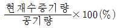
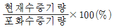
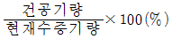
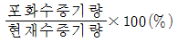
(정답률: 65%)
2과목: 위생설비
21. 연관에 관한 설명으로 옳지 않은 것은?
- 내식성이 작다.
- 가공이 용이하다.
- 전성, 연성이 풍부하다.
- 건조한 공기 중에서는 침식되지 않는다.
(정답률: 71%)
22. 가스계량기의 설치위치에 관한 설명으로 옳지 않은 것은?
- 전기계량기와 60cm 이상 떨어져 있어야 한다.
- 전기계폐기와 60cm 이상 떨어져 있어야 한다.
- 전기접속기와 15cm 이상 떨어져 있어야 한다.
- 절연조치를 하지 않은 전선과 15cm 이상 떨어져 있어야 한다.
(정답률: 66%)
23. 대규모 건물에서 간접가열식 중앙식 급탕방식에 관한 설명으로 옳지 않은 것은?
- 직접가열식에 비해 열효율이 높다.
- 가열보일러는 난방보일러와 겸용할 수 있다.
- 직접가열식에 비해 구조가 약간 복잡해진다.
- 고온의 탕을 얻기 위해서는 증기 또는 고온수 보일러를 사용한다.
(정답률: 73%)
24. 유류화재에 대한 소화기의 적응 화재별 표시로 옳은 것은?
- A
- B
- C
- D
(정답률: 80%)
25. 대변기의 세정방식에 관한 설명으로 옳은 것은?
- 로 탱크식은 연속사용이 가능하다.
- 하이 탱크식과 로 탱크식은 급수압이 낮아도 사용이 가능하다.
- 플러시 밸브식은 급수관경에 제한이 없어 일반 가정용으로 주로 사용된다.
- 로 탱크식은 하이 탱크식에 비해 세정소음이 크나, 화장실 면적을 넓게 사용할 수 있다는 장점이 있다.
(정답률: 56%)
26. 다음 중 오수정화시설에서 유량조정조를 설치하는 이유와 가장 관계가 먼 것은?
- 처리기능을 안정화할 수 있기 때문에
- 건물 내 오수량의 시간별 차이가 크기 때문에
- 후속 처리공정의 용량을 줄일 수 있기 때문에
- 유입되는 오수의 찌꺼기를 제거할 수 있기 때문에
(정답률: 77%)
27. 내경 500mm, 길이 50m인 주철관에 1.7m/s의 유속으로 물이 흐를 때 마찰손실수두는? (단, 마찰계수 λ = 0.03이다.)
- 0.44m
- 0.52m
- 0.78m
- 0.97m
(정답률: 41%)
28. 옥내소화전설비에서 압력수조를 이용한 가압송수장치의 경우, 압력수조의 압력은 다음의 어느식에 의하여 산출한 수치 이상으로 하여아 하는가? (단, P: 필요한 압력, P1: 소방용호스의 마찰손실 수두압, P2: 배관의 마찰손실 수두압, P3: 낙차의 환산 수두압, 단위는 MPa)
- P = P1 + P2 + P3 + 0.17
- P = P1 + P2 + P3 - 0.17
- P = P1 + P2 - P3 + 0.17
- P = P1 + P2 - P3 - 0.17
(정답률: 74%)
29. 다음과 같이 정의되는 통기관의 종류는?
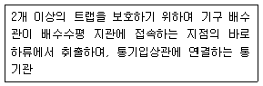
- 각개통기관
- 회로통기관
- 신정통기관
- 결합통기관
(정답률: 61%)
30. 급수설비의 조닝방식 중 중간수조방식에 관한 설명으로 옳은 것은?
- 정밀한 조닝이 용이하다.
- 중간수조실 및 양수펌프가 필요없다.
- 수압이 일정하지 않고 변화가 심하다.
- 감압밸브 방식에 비해 에너지 절약을 꾀할 수 있다.
(정답률: 51%)
31. 배수관 계통에서 통기관을 설치하는 목적은?
- 배관의 결로방지를 위하여
- 트랩의 봉수를 보호하기 위하여
- 배관의 수명을 연장하기 위하여
- 배관 내의 소음을 방지하기 위하여
(정답률: 78%)
32. 간접가열식 급탕설비에서 트랩을 설치하는 가장 주된 이유는?
- 신축을 흡수하기 위하여
- 급탕의 오염을 방지하기 위하여
- 저탕조의 온도를 감지하기 위하여
- 응축수를 보일러로 환수하기 위하여
(정답률: 67%)
33. 펌프에 관한 설명으로 옳지 않은 것은?
- 마찰펌프는 소용량에 비해 높은 양정을 얻을 수 있다.
- 원심식 펌프에는 피스톤 펌프, 다이아프램 펌프 등이 있다.
- 급수설비에서 급수 및 양수 펌프로는 주로 원심식 펌프가 사용된다.
- 볼류트 펌프는 와권 케이싱과 회전차로 구성되며, 디퓨저 펌프는 회전차 주위에 디퓨저인 안내 날개를 가지고 있다.
(정답률: 63%)
34. 다음의 급수방식 중 수질오염 가능성이 가장 큰 것은?
- 수도직결방식
- 압력탱크방식
- 고가탱크방식
- 펌프직송방식
(정답률: 78%)
35. 배관을 통해 고가수조에 매시 25.2m3의 물을 유속 1.5m/s로 양수하려고 할 경우, 필요한 배관의 내경은?
- 약 65mm
- 약 70mm
- 약 77mm
- 약 81mm
(정답률: 55%)
36. 급탕 인원수 150명인 아파트의 1일당 최대 예상급탕량은? (단, 1일 1인당 급탕량은 140L/c/d 이다.)
- 17800L/d
- 21000L/d
- 24000L/d
- 16800L/d
(정답률: 74%)
37. 배수관 관경결정에 이용되는 기구배수부하 단위의 기준이 되는 기구는?
- 욕조
- 소변기
- 세면기
- 대변기
(정답률: 84%)
38. 양수펌프에서 흡수면으로부터 토출수면까지 물이 올라가는데 필요한 에너지를 무엇이라 하는가?
- 실양정
- 전양정
- 압력수두
- 속도수두
(정답률: 64%)
39. 각종 밸브에 관한 설명으로 옳은 것은?
- 볼밸브 : 콕의 일종으로 구조가 간단하나 밸브를 완전히 열고 사용할 때 저항손실이 크다.
- 체크밸브 : 역류방지밸브로서 스윙형은 저항손실이 적고 수평, 수직배관에 모두 사용이 가능하다.
- 슬루스밸브 : 밸브를 일부만 열고 사용하여도 유체의 저항손실이 작기 때문에 유량조절용에 적합하다.
- 글로브밸브 : 밸브를 완전히 열고 사용하는 경우에는 유체저항손실이 없으나 일부만 열고 사용하는 경우에는 저항손실이 크다.
(정답률: 67%)
40. 최대강우량 60mm/h의 지역에 있는 수평투영면적 1200m2의 건물에 4개의 우수배수수직관을 설치할 경우 알맞은 관경은?
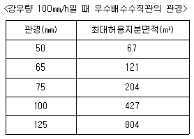
- 50mm
- 65mm
- 75mm
- 100mm
(정답률: 63%)
3과목: 공기조화설비
41. 덕트에 사용되는 스플릿 댐퍼에 관한 설명으로 옳지 않는 것은?
- 주덕트의 압력강하가 적다.
- 정밀한 풍량조절이 용이하다.
- 누설이 많아 폐쇄용으로 사용이 곤란하다.
- 분기부에 설치하여 풍량조절용으로 사용된다.
(정답률: 56%)
42. 건구온도 25℃의 공기 1000m3를 32℃로 가열하기 위해 필요한 열량은? (단, 공기의 비열은 1.01kJ/kg·K이고, 공기의 밀도는 1.2kg/m3이다.)
- 7070kJ
- 8484kJ
- 9642kJ
- 9854kJ
(정답률: 57%)
43. 진공환수시 방열기보다 높은 곳에 환수횡주관을 배관하거나, 환수주관보다 높은 위치에 진공 펌프를 설치하는 경우 환수관의 응축수를 끌어올리기 위해 사용하는 것은?
- 팽창관
- 증발탱크
- 리프트 이음
- 응축수 트랩
(정답률: 68%)
44. 다음과 같은 [조건]에 있는 사무실의 환기에 의한 손실 열량(현열)은?
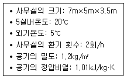
- 842.01W
- 1075.78W
- 1237.25W
- 4274.03W
(정답률: 45%)
45. 취출구에 관한 설명으로 옳지 않은 것은?
- 팬(pan)형은 유인비 및 소음발생이 적다.
- 아네모스탯형은 1차공기에 의한 2차공기의 유인성능이 좋다.
- 노즐형은 소음이 크기 때문에 취출풍속을 5m/s 이하로 하여 사용된다.
- 브리즈 라인형은 선의 개념을 통하여 인테리어 디자인에서 미적인 감각을 살릴 수 있다.
(정답률: 60%)
46. 중앙공기조화방식 중 전공기 방식의 일반적 특징으로 옳지 않은 것은?
- 덕트 스페이스가 필요 없다.
- 중간기에 외기냉방이 가능하다.
- 실내에 배관으로 인한 누수의 우려가 없다.
- 외기도입이 가능하여 실내 공기의 오염이 적다.
(정답률: 57%)
47. 화장실, 부엌 및 욕실 등과 같이 부압을 유지해야 하는 공간에 주로 적용되는 환기 방식은?(오류 신고가 접수된 문제입니다. 반드시 정답과 해설을 확인하시기 바랍니다.)
- 제1종 환기
- 제2종 환기
- 제3종 환기
- 자연환기
(정답률: 72%)
48. 에너지절감을 목적으로 사용하는 전열교환기는 어떤 열을 회수하는 장치인가?
- 복사열
- 대류열
- 엔탈피
- 엔트로피
(정답률: 54%)
49. 온수난방의 부속기기로 사용되는 팽창탱크에 관한 설명으로 옳지 않은 것은?
- 장치내의 온도변화에 따른 물의 체적변화를 흡수한다.
- 팽창된 물의 배출을 방지하여 장치의 열손실을 방지한다.
- 밀폐식 팽창탱크는 장치내의 주된 공기배출구로 이용되며, 온수보일러의 도피관으로도 사용된다.
- 장치의 휴지 중에도 배관계를 일정압력 이상으로 유지하여, 물의 누수 등으로 발생하는 공기의 침입을 방지한다.
(정답률: 53%)
50. 습공기를 현열만으로 가열할 경우 감소되는 것은?
- 엔탈피
- 건구온도
- 습구온도
- 상대습도
(정답률: 54%)
51. 송풍기의 특성 곡선에 나타나지 않는 것은?
- 전압
- 효율
- 풍속
- 축동력
(정답률: 50%)
52. 덕트의 아스팩트비(aspect ratio)의 정의로 옳은 것은?
- 장방형덕트에서 면적과 장변의 비율
- 장병형덕트에서 장변과 단변의 비율
- 원형덕트에서 단면적과 직경의 비율
- 원형덕트에서 풍량과 단면적의 비율
(정답률: 72%)
53. 다음 중 구조체의 열용량이 클 경우 발생하는 현상과 거리가 먼 것은?
- 결로 방지
- 시간지연효과
- peak load의 감소
- 실내온열환경 안정화
(정답률: 46%)
54. 증기 발생기라고도 불리우며 수관으로 되어 있으나 드럼이 없고 증기발생이 빠르므로 간단히 고압의 증기를 얻으려 하는 경우에 사용되는 보일러는?
- 관류 보일러
- 연관 보일러
- 수관 보일러
- 주철제 보일러
(정답률: 55%)
55. 다음 중 공기조화부하 계산에 사용되는 유리의 차폐계수가 가장 큰 것은? (단, 내부 블라인드가 없는 경우)
- 두께 3mm 보통유리
- 두께 3mm 흡열유리
- 두께 5mm 보통유리
- 두께 5mm 흡열유리
(정답률: 60%)
56. 보일러의 실제 증발량이 2000kg/h이고, 발생증기의 엔탈피는 2768.8kJ/kg, 보일러에 보급되는 급수의 엔탈피는 335.2kJ/kg이다. 이 보일러의 환산증발량(상당증발량)은? (단, 100℃에서 물의 증발잠열은 2257kJ/kg이다.)
- 약 1000kg/h
- 약 1078kg/h
- 약 1124kg/h
- 약 2156kg/h
(정답률: 31%)
57. 다음의 냉동기 중 소음 진동이 가장 적은 것은?
- 흡수식
- 터보식
- 왕복동식
- 스크류식
(정답률: 77%)
58. 길이 20m인 배관 내로 증기가 간헐적으로 흐르고 있다. 증기가 통과할 때의 관온도가 100℃, 흐르지 않고 있을 때의 관온도가 20℃라고 하면, 증기가 통과할 때 늘어나는 관길이는? (단, 배관재료의 선팽창계수는 1.2×10-5/℃이다.)
- 19.2mm
- 25.2mm
- 29.4mm
- 38.4mm
(정답률: 42%)
59. 몰리에르 선도상에서 히트펌프의 난방시 성적계수를 산정하는 식은?
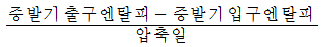
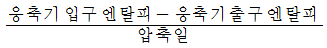
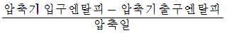
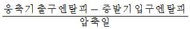
(정답률: 53%)
60. 증기난방에 관한 설명으로 옳지 않은 것은?
- 온수난방에 비해 열용량이 크다.
- 한랭지에서 동결의 우려가 적다.
- 방열면적을 온수난방보다 작게 할 수 있다.
- 증발잠열을 이용하기 때문에 열의 운반능력이 크다.
(정답률: 45%)
4과목: 건축설비관계법규
61. 숙박시설의 용도로 쓰는 건축물로서 방송 공동 수신설비를 설치하여야 하는 건축물의 바닥면적 기준은?
- 바닥면적의 합계가 1000m2 이상인 건축물
- 바닥면적의 합계가 2000m2 이상인 건축물
- 바닥면적의 합계가 5000m2 이상인 건축물
- 바닥면적의 합계가 10000m2 이상인 건축물
(정답률: 55%)
62. 화재안전기준에 따라 소화기구를 설치하여야 하는 특정소방대상물의 연면적 기준은?
- 10m2이상
- 25m2이상
- 33m2이상
- 45m2이상
(정답률: 63%)
63. 다음은 건축물의 에너지절약설계기준에 따른 에너지 성능지표의 판정에 관한 기준 내용이다. ( ) 안에 알맞은 것은?
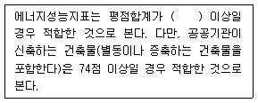
- 65점
- 72점
- 84점
- 90점
(정답률: 73%)
64. 다음 중 철근콘크리트조로서 두께가 10cm 이상인 경우에만 내화구조에 속하는 것은?
- 보
- 바닥
- 지붕
- 계단
(정답률: 60%)
65. 건축법령상 고층건축물의 정의로 옳은 것은?
- 층수가 20층 이상거나 높이가 60m 이상인 건축물
- 층수가 20층 이상거나 높이가 80m 이상인 건축물
- 층수가 30층 이상거나 높이가 90m 이상인 건축물
- 층수가 30층 이상거나 높이가 120m 이상인 건축물
(정답률: 69%)
66. 건축물의 설비기준 등에 관한 규칙에 따라 피뢰설비를 설치하여야 하는 대상 건축물의 높이 기준은?
- 높이 10m 이상인 건축물
- 높이 20m 이상인 건축물
- 높이 30m 이상인 건축물
- 높이 50m 이상인 건축물
(정답률: 77%)
67. 다음은 건축물의 바깥쪽으로의 출구의 설치에 관한 기준 내용이다. ( )안에 알맞은 것은?
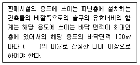
- 0.6m
- 1.2m
- 1.5m
- 1.8m
(정답률: 50%)
68. 다음의 소방시설 중 소화활동설비에 속하지 않는 것은?
- 연결송수관설비
- 비상콘센트설비
- 무선통신보조설비
- 상수도소화용수설비
(정답률: 58%)
69. 건축법령상 단독주택에 속하지 않는 것은?
- 공관
- 다중주택
- 다세대주택
- 다가구주택
(정답률: 66%)
70. 다음 중 피난용도로 쓸 수 있는 광장을 옥상에 설치 하여야 하는 대상 건축물은?
- 5층 이상인 층이 판매시설의 용도로 사용되는 건축물
- 5층 이상인 층이 공동주택의 용도로 사용되는 건축물
- 5층 이상인 층이 업무시설의 용도로 사용되는 건축물
- 5층 이상인 층이 의료시설의 용도로 사용되는 건축물
(정답률: 56%)
71. 건축물 내부에 설치하는 피난계단의 구조에 관한 기준 내용으로 옳지 않은 것은?
- 계단실에는 예비전원에 의한 조명설비를 할 것
- 계단실의 실내에 접하는 부분의 마감은 난연재료로 할 것
- 계단은 내화구조로 하고 피난층 또는 지상까지 직접 연결되도록 할 것
- 계단실은 창문•출입구 기타 개구부를 제외한 당해 건축물의 다른 부분과 내화구조의 벽으로 구획할 것
(정답률: 68%)
72. 승용승강기 설치 대상 건축물에서 승용승강기 설치 대수의 산정 요소로만 나열된 것은?
- 건축물의 용도, 6층 이상의 거실면적의 합계
- 건축물의 층수, 6층 이상의 거실면적의 합계
- 건축물의 용도, 6층 이상의 바닥면적의 합계
- 건축물의 층수, 6층 이상의 바닥면적의 합계
(정답률: 57%)
73. 건축물에 설치하는 급수•배수 등의 용도로 쓰이는 배관설비에 관한 기준 내용으로 옳지 않은 것은?
- 배수용 우수관과 오수관은 분리하여 배관 할 것
- 건축물의 주요부분을 관통하여 배관하지 아니할 것
- 배수용 배관설비의 오수에 접히는 부분은 내수재료를 사용할 것
- 승강기의 승강로안에는 승강기의 운행에 필요한 배관 설비외의 배관설비를 설치하지 아니할 것
(정답률: 50%)
74. 다음의 스프링클러설비의 설치면제에 관한 기준 내용 중 ( )안에 알맞은 것은?
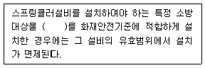
- 연결살수설비
- 옥내소화전설비
- 옥외소화전설비
- 물분무등소화설비
(정답률: 74%)
75. 건축물을 특별시나 광역시에 건축하고자 하는 경우 특별시장이나 광역시장의 허가를 받아야 하는 건축물의 규모 기준으로 옳은 것은?
- 층수가 11층 이상이거나 연면적의 합계가 10000m2 이상인 건축물
- 층수가 11층 이상이거나 연면적의 합계가 100000m2 이상인 건축물
- 층수가 21층 이상이거나 연면적의 합계가 10000m2 이상인 건축물
- 층수가 21층 이상이거나 연면적의 합계가 100000m2 이상인 건축물
(정답률: 60%)
76. 다음 중 주요구조부를 내화구조로 하여야 하는 건축물은?
- 종교시설의 용도로 쓰이는 건축물로서 집회실의 바닥면적의 합계가 150m2인 건축물
- 판매시설의 용도로 쓰는 건축물로서 그 용도로 쓰는 바닥면적의 합계가 400m2인 건축물
- 공장의 용도로 쓰는 건축물로서 그 용도로 쓰는 바닥면적의 합계가 1000m2인 건축물
- 운수시설의 용도로 쓰는 건축물로서 그 용도로 쓰는 바닥면적의 합계가 500m2인 건축물
(정답률: 39%)
77. 건축물의 에너지절약 설계기준상 다음과 같이 정의 되는 용어는?
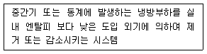
- 변풍량제어시스템
- 이코너마이저시스템
- 비례제어운전시스템
- 대수분할운전시스템
(정답률: 72%)
78. 비상용승강기의 승강장 및 승강로의 구조에 관한 기준 내용으로 옳지 않은 것은?
- 승강로는 당해 건축물의 다른 부분과 내화구조로 구획할 것
- 승강장의 바닥면적은 비상용승강기 1대에 대하여 5m2이상으로 할 것
- 각층으로부터 피난층까지 이르는 승강로를 단일구조로 연결하여 설치할 것
- 승강장은 각층의 내부와 연결될 수 있도록 하되, 그 출입구(승강로의 출입구를 제외 한다)에는 갑종방화문을 설치할 것
(정답률: 75%)
79. 공동 소방안전관리자 선임대상 특정소방대상물 기준으로 옳지 않은 것은?
- 판매시설 중 도매시장 및 소매시장
- 복합건축물로서 층수가 5층 이상인 것
- 지하층을 제외한 층수가 6층 이상인 건축물
- 복합건축물로서 연면적이 5000m2 이상인 것
(정답률: 50%)
80. 오피스텔의 난방설비를 개별난방방식으로 하는 경우에 관한 기준 내용으로 옳지 않은 것은?
- 난방구획을 방화구획으로 구획할 것
- 보일러의 연도는 내화구조로서 개별연도로 설치할 것
- 가스보일러인 경우, 보일러실의 윗부분에는 그 면적이 0.5m2 이상인 환기창을 설치할 것
- 보일러는 거실외의 곳에 설치하되, 보일러를 설치하는 곳과 거실사이의 경계벽은 출입구를 제외하고는 내화구조의 벽으로 구획할 것
(정답률: 49%)
서고의 채광과 통풍을 원활히 할 수 있는 넓은 창호가 되어야 하는 이유는 책이나 문서 등이 습기와 먼지로부터 보호되기 위해서이다. 채광과 통풍이 원활하지 않으면 서고 내부가 습기와 먼지로 가득 차서 책이나 문서 등이 손상될 수 있다. 따라서 넓은 창호를 설치하여 적절한 채광과 통풍을 유지해야 한다.